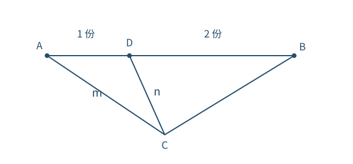
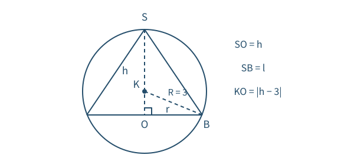
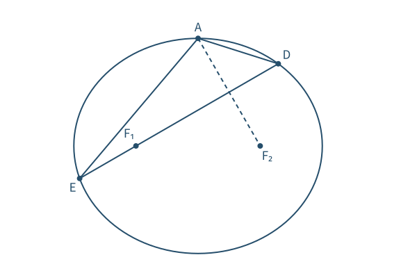
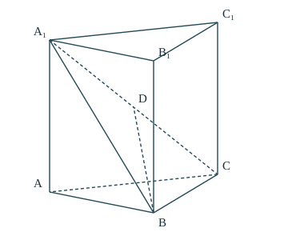
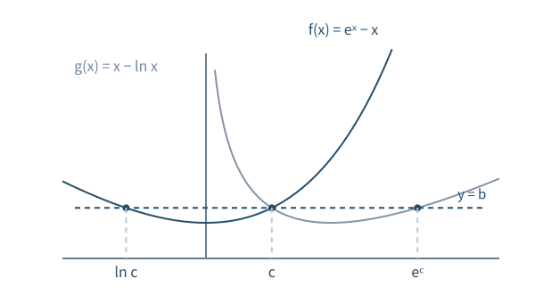

第 1 题 · 单项选择题 · 5 分
根式不等式先写定义域
集合
题目
，，求
。
A. B. C. D. 已知与目标
由
确定，
由
确定。求同时满足两个条件的实数。
思路
根式不等式有两个要求：根号内有意义，以及根式大小满足条件。先分别求出两个集合，再取公共部分。
解题步骤
有意义要求
。在此前提下，两边均非负，
等价于
，所以
。
两边除以正数
，得
，所以
。
同时满足的条件为
，即
。
检查
左端
满足两个条件，可取；右端
使
，不满足严格小于，所以不可取。
第 2 题 · 单项选择题 · 5 分
共轭和只保留实部
复数
题目
若
，求
。
所用高中知识
复数运算；共轭复数；。
已知与目标
，求
。
思路
先解一次方程求出
。共轭的和等于实部的两倍，也可直接相加验证。
解题步骤
因
，，这里利用
。
移项得
，因此
。
相加后虚部抵消：。
检查
将
代回，。不要误写
。
第 3 题 · 单项选择题 · 5 分
用内分点表达位置向量
平面向量
题目
在
的边
上，。已知
，求
。
A. B. C. D. 
AD 是 AB 的三分之一；把各向量统一为以 C 为起点。已知与目标
在
上且
；已知以
为共同起点的向量
，求
。
思路
由长度比例知道
占
的三分之一。先把
写成两个已知向量的差，再接上
。
解题步骤
，且
与
同向，所以
。
由向量三角形法则，。
因此
。
答案
B，。
检查
也可写
，移项得到相同结果。长度
不等于向量
，二者方向相反。
第 4 题 · 单项选择题 · 5 分
水量变化转化为棱台体积
几何建模
题目
水库水位海拔
时水面面积
，海拔
时为
。把两水位间的库体视为棱台，求增加的水量约为多少。取
。
A. B. C. D. 所用高中知识
棱台体积公式；面积、体积单位换算；近似计算。
已知与目标
上下水面的面积是
，两水位间近似为棱台，求新增水量。
思路
新增水量只对应两水面之间的空间。棱台的高是水位差，不能把某一水位的海拔直接当作高。
解题步骤
高
。面积换算为
，。
棱台体积
。根号项为
。
所以
。
代入
，得
，最接近
。
答案
C，约
。
检查
结果应处于
与
之间，本结果满足。面积单位转换要乘
，不是
。
第 5 题 · 单项选择题 · 5 分
数互质对，先明确是否有序
古典概型
题目
从
七个整数中随机取两个不同的数，求两数互质的概率。
所用高中知识
组合计数；古典概型；补事件；最大公因数。
已知与目标
从七个不同整数
至
中任取两个不同数，求最大公因数为
的概率。
思路
互质对较多，不互质对较少，用补事件计数更清楚。选出的两个数没有先后顺序，分母和分子应使用同一种计数方式。
解题步骤
所有无序数对共
个，且等可能。
若不互质，就有共同的质因数。在
至
中，共同质因数只可能是
或
；、
在此范围都只有一个倍数，不能组成两个不同数。
公因数含
：从
中取两个，共
对。公因数含
：只有
一对。两类没有重合，因为范围内只有一个
的倍数。
不互质共
对，互质共
对，所求概率为
。
检查
若按有序数对计数，分母为
，互质结果为
，比例仍为
；不能只给其中一方乘
。
第 6 题 · 单项选择题 · 5 分
中心对称与周期共同锁定频率
三角函数参数
题目
，，最小正周期
满足
，图像关于
中心对称。求
。
所用高中知识
正弦函数的最小正周期；中心对称；整数参数筛选。
已知与目标
周期满足
，图像关于
中心对称，求
。
思路
正弦曲线的中心都在中线上，中心处相位为整数倍
。周期条件给频率范围，两者联立筛出唯一整数。
解题步骤
的值域为
，中心纵坐标是两端的平均数
，故
。
，且
。由
，得到
。
中心处相位满足
，其中
，所以
。
代入范围，，即
。唯一整数是
，故
。
。
检查
此时周期为
，确在给定开区间中；在
处相位为
，确为中心位置。
第 7 题 · 单项选择题 · 5 分
构造差函数比较相近的数
指数与对数
题目
，，。判断大小关系。
所用高中知识
指数、对数函数；导数判单调；辅助差函数。
已知与目标
比较
、、。三个数很接近，需严格比较。
思路
令
，将三数看成
、、。两次作差，用“差函数在
处为
、导数为正”证明大小，不使用小数近似或积分。
解题步骤
先准备基本不等式：
满足
，对
有
，因此
。
比较
。设
，。，对
，
此区间内
，故
，于是
，即
。
比较
。设
，。，（），所以
。
指数函数严格递增，故
。乘以正数
，得
。
检查
两个比较各有明确适用范围；证明
只需在
上成立，不要把这一步推广到整个
。
第 8 题 · 单项选择题 · 5 分
用高度统一球面约束
球与棱锥
题目
正四棱锥的侧棱长为
，各顶点同在体积为
的球面上。若
，求棱锥体积范围。

过锥轴和底面对角线的截面；图中 h>3，球心在顶点与底面之间。所用高中知识
球体体积；球的截面；勾股定理；棱锥体积；闭区间最值。
已知与目标
球体积
，正四棱锥的五个顶点在球面上，侧棱
。求棱锥体积的完整范围。
思路
正四棱锥的顶点、底面中心与球心共轴。用锥高
表示底面外接圆半径，再把侧棱约束转成
的区间，最后找体积的最大最小值。
解题步骤
由
，得球半径
。设顶点为
、底面中心为
、球心为
。球心到四个底面顶点等距，所以
在底面中心的垂线上，也就是锥轴。
以顶点
向底面为轴的正方向，球心在距离顶点
处。设锥高
，底面外接圆半径
，由截面直角三角形得
，即
。
侧棱满足
。因此
，即
。
正方形底面对角线为
，面积为
。于是
，导数
。
在允许区间中，
于
递增，于
递减。三个候选值为
，，。
比较得到最小值
、最大值
。
连续，且在
已从最小值连续增到最大值，故中间每个体积值均能取得。
答案
C，。
检查
最大值对应
，侧棱
在允许范围内。球心可在底面上方或下方，式
已同时涵盖，不应漏掉
。
第 9 题 · 多项选择题 · 5 分
线线角与线面角要区分
空间角
题目
正方体
中，判断下列角度。
A.
与
成
B.
与
成
C.
与平面
成
D.
与平面
成
所用高中知识
空间坐标；向量数量积；法向量；线面角。
已知与目标
在正方体中判断两组线线角及两组线面角。边长可取
，因为缩放不改变角度。
思路
线线垂直可由方向向量数量积为零验证；线面角与直线同法向量的夹角互余，所以其正弦由数量积比值给出。
解题步骤
取
，上层对应点的第三坐标均为
。于是
。
A：，与
的数量积为
，故成
。B：，数量积同样为
，也成
。
C：平面
内有两个不平行方向
、。向量
与二者数量积均为零，因此是该平面的法向量。
若线面角为
，则
，所以角为
，C
错。
D：底面的法向量为
，线面角正弦为
，故角为
，D
对。也可直接看
在底面的投影为
，直角三角形
两直角边相等。
检查
所有法向量都是通过与平面内两条独立方向的数量积为零验证的，没有使用叉乘。线面角的公式取正弦，不是余弦。
第 10 题 · 多项选择题 · 5 分
极值、零点与切线分别判断
三次函数
题目
对
，判断：
所用高中知识
导数与极值；函数零点；中心对称；切线方程。
已知与目标
，分别判断极值、零点、对称中心和给定切线。
思路
四个选项考查不同性质，应分开验证。零点不能只看次数，切线也不能只看斜率相同。
解题步骤
，零点为
。导数符号从左到右是正、负、正，因此有一个极大值点和一个极小值点，A
对。
两个极值分别是
、，均为正。中间下降段和右边上升段均在横轴上方，不可能有零点。
左边上升段至多有一个零点。又
，由连续函数零点定理，该段确有一个零点。因此全函数只有一个零点，B
错。
，所以关于点
中心对称，C 对。
若
是切线，切点横坐标
须满足
，即
，得
。在
处切线为
；在
处切线为
。均不是
，D
错。
检查
次数为
不意味着有三个实零点；切线同时受切点位置和导数限制，只有斜率吻合不够。
第 11 题 · 多项选择题 · 5 分
用韦达定理算距离乘积
抛物线与割线
题目
为原点，
在抛物线
（）上。过
的直线与抛物线交于不同的
。
C. D. 所用高中知识
抛物线标准方程；切线与判别式；韦达定理；两点距离。
已知与目标
在抛物线上，过
的直线与曲线有两个不同交点。判断准线、切线及两个严格距离不等式。
思路
先由
求曲线，再用割线两交点横坐标作为二次方程的根。根的乘积固定，能把距离乘积简化到斜率。
解题步骤
代入
得
，故
，抛物线是
，准线为
，A
错。
方程为
。与抛物线联立得到
，只有重合的交点
；也可由
在
处斜率为
验证相切，故 B 对。
竖直线经过
时是
，与抛物线只有一个交点，不符题设。故设割线为
，交点横坐标为
。有
，所以
，且两个不同实根要求
。
，故
利用
，根号内为
，所以乘积为
。而
，C
对。
- 从
到交点的向量为
、，所以
。又
，D
对。
检查
题设“两点”是不同交点，所以
，两个结论都是严格大于；等号只会出现在切线退化情形，不属于本题割线。
第 12 题 · 多项选择题 · 5 分
平移后的偶函数对应对称轴
函数对称性
题目
的定义域均为
，记
。若
、
都是偶函数，判断：
所用高中知识
偶函数与轴对称；复合函数求导；周期关系；反例。
已知与目标
、
均为偶函数且
，判断四个结论。
思路
先把复合函数的偶性翻译为
的对称等式。对
的等式求导会改变符号，再与
的偶对称关系合成平移关系。
解题步骤
第一条件给出
。由于
可取任意实数，
关于直线
对称，即
。
对上式关于
求导，链式法则给
，所以
。取
，得
。
第二条件给出
，即
。将对称等式求导后得到的
等式与它结合：，因此
。
B：，正确。C：
与
关于
对称，所以
，正确。
A 不一定成立：取
、，题设两复合函数都是偶函数，但
。
D 不一定成立：取
，则
。有
都为偶函数；但
。
检查
的轴对称经过求导后变为
关于该中心的反对称，负号来自内层
的导数
，不可遗漏。
第 13 题 · 填空题 · 5 分
分清两项乘法的来源
二项式定理
题目
求
展开式中
的系数。
所用高中知识
二项式定理；代数式乘法；同类项系数相加。
已知与目标
求
中
的系数。
思路
外层的
和
会各贡献一项，必须分别确定内层所需项，再相加。
解题步骤
的一般项为
，。
外层取
时，需要内层
，所以
，贡献系数
。
外层取
时，为使乘积变为
，内层必须取
，即
，贡献系数
。
两路贡献相加，最终系数为
。
检查
第二路的指数是
，负号来自外层，不能漏记。
第 14 题 · 填空题 · 5 分
先试竖直线，直接验证距离
圆的公切线
题目
写出同时与圆
和
相切的一条直线方程。
所用高中知识
圆的标准方程；直线与圆相切的距离判据。
已知与目标
两个圆的圆心分别为
、，半径分别为
、。写一条公切线即可。
思路
题目不要求全部解，先尝试竖直线。两个圆的最左端横坐标都是
，这提示
可能同时相切。
解题步骤
第一圆左端横坐标为
；第二圆左端横坐标为
。
直线
到第一圆心的距离为
，等于第一圆半径。
它到第二圆心的距离为
，等于第二圆半径。
因两圆心到该直线距离分别等于对应半径，直线与两圆均相切。
检查
两切点分别为
、，代入各自圆方程成立。公切线必须分别与各圆相切，但不一定经过两圆彼此的公共点；各圆上的切点与两圆彼此的公共点不能混淆。
第 15 题 · 填空题 · 5 分
切点方程与不同切线的验证
导数与切线
题目
曲线
有两条经过坐标原点的不同切线，求
的取值范围。
所用高中知识
导数与切线；二次方程判别式；导数判单调。
已知与目标
曲线
有两条经过原点的不同切线，求
的取值范围。
思路
用切点横坐标
表示切线，过原点条件将指数因子消去，得到二次方程。判别式只保证两个切点，最后还要用单调性证明它们不会给出同一条切线。
解题步骤
。在切点处的切线为
，它过原点当且仅当
。
代入并除以
，得
，等价于
。
两个不同切点要求
，故候选范围是
或
。当
或
时只有一个重根，不能取端点。
下面验证不同切点一定产生不同切线。反设同一条过原点直线
在
两处相切，则
且
。
记
。对这个函数求导，，所以
在
严格递减，在
严格递增。
由于
且
，两点必须分居
的最小值点两侧。于是对一切
都有
。
再设
，则在
上
，故
严格递减，必有
。但相切且共线要求这两个值都为
，矛盾。因此两条切线确实不同，候选范围全部成立。
答案
。
检查
最后三步只是把导数本身当作普通函数，运用两次“导数符号决定单调性”；不需要任何中值定理。切点方程的每个根都能代回产生过原点的切线，充分性完整。
第 16 题 · 填空题 · 5 分
把三角形周长改成焦距和
椭圆与对称
题目
椭圆
（）上顶点为
，焦点为
，离心率
。过
且垂直
的直线交椭圆于
，。求
周长。

DE 是 AF₂ 的垂直平分线，焦点 F₁ 在线段 DE 内。所用高中知识
椭圆定义和离心率；等边三角形；垂直平分线；直线与椭圆联立；弦长。
已知与目标
椭圆离心率为
，过左焦点且垂直
的弦长为
。求三角形
的周长。
思路
离心率先给出三个点
构成等边三角形，弦所在直线因而成为
的垂直平分线。它将
转成焦半径，使周长等于
，最后只需由弦长求
。
解题步骤
，所以
，。取
。
，且
，所以三角形
等边。过
垂直
的直线就是
的垂直平分线，故
。
焦点
在椭圆内部且位于弦上，所以在线段
内，。因此周长
-
的斜率为
，故弦直线为
。令
，代入椭圆
，得到
两根之差的绝对值为
。所以两交点横坐标差的绝对值为
。
弦斜率为
，故
。由
得
，周长
。
检查
弦长不等于横坐标差，必须乘
。焦点在线段
内保证
，若点在延长线上不能这样相加。
第 17 题 · 解答题 · 10 分
和项比先转成和与项的关系
数列
题目
记
为数列
前
项和，，数列
是公差为
的等差数列。
（1）求
的通项；（2）证明
。
所用高中知识
等差数列；前项和与通项关系；递推连乘；裂项求和。
已知与目标
是首项为
、公差为
的等差数列，。求
并证明倒数和小于
。
思路
先把“比值成等差”变为
与
的等式，再用相邻两式相减消去求和符号。通项得到相邻整数乘积，倒数自然适合裂项。
解题步骤
，故
，即
。
对
，还可写
。两式相减，用
，得
。
整理为
，所以
。从
开始连乘：
时该式也给出
，所以通项对所有正整数
成立。又各项为正，允许取倒数。
，因此
答案
（1）；（2）倒数和为
，因此严格小于
。
检查
递推相减只对
使用，
必须单独核对。通项可反查
，比值确为
。
第 18 题 · 解答题 · 12 分
先把角关系化简到一个参数
三角函数与最值
题目
的内角对边分别为
，且
（1）若
，求
；（2）求
的最小值。
所用高中知识
倍角公式；三角形内角和；正弦定理；基本不等式及等号条件。
已知与目标
给定
的三角关系，先在
时求
，再求
的最小值。
思路
先把关系化为
，利用内角范围确定唯一角关系，避免反三角或正切周期造成多解。边长比再由正弦定理化为一个变量。
解题步骤
原式分母
非零，所以
。由倍角公式，右端为
。交叉相乘得
。
移项并用和角公式：。
，所以
，从而
。又
，在这个区间正弦严格递增，故
给出
。
由内角和，，因此
。若
，则
。
第二问由正弦定理得到
令
，用
、，原式成为
。
由于两项都为正，基本不等式给出
。等号要求
，即
。
，确有
取到这个
；再由第
4 步生成的
均为正且内角和为
，所以等号可取。
答案
（1）；（2）最小值为
。
检查
等号处的
是
，不是
。后者是被排除的区间端点，会使
，不能构成三角形。
第 19 题 · 解答题 · 12 分
换底计算同一个四面体体积
立体几何
题目
直三棱柱
的体积为
，
面积为
。
（1）求
到平面
的距离；（2）
为
中点，，且平面
平面
，求二面角
的正弦值。

题设空间关系示意；虚线表示被遮挡的线段或辅助线，长度以条件为准。所用高中知识
棱柱与棱锥体积；面面垂直；空间直角坐标；数量积与二面角。
已知与目标
直三棱柱体积为
，。先求点面距离；再由等长、垂直及中点条件求二面角正弦。
思路
第一问对同一个四面体换底算体积。第二问先从垂直平面推出底面为直角三角形，再确定边长，最后用数量积验证法向量并计算角。
解题步骤
三棱锥
与直棱柱同底同高，故体积是棱柱的三分之一，即
。它也就是以
为顶点、
为底的四面体。
设点面距离为
，，所以
。
第二问取
为
中点。因
且
，
为等腰直角三角形，。又平面
平面
，交线是
，所以
平面
。
因而
。另由直棱柱得
。在平面
内过
作一条平行于
的直线，它与
相交且不平行，两条线都垂直
，故
平面
，特别有
。
设
。第
3 步说明
就是
到平面
的距离。等腰直角三角形中
，故
。由棱柱体积
，得
。
建系：。
为
中点，故
。
平面
中有
。解
与两向量数量积为零，可取
。平面
中有
，同样可取
。
两法向量的数量积为
，模都为
，夹角余弦为
。二面角与法向量夹角相等或互补，两者正弦相同，因此所求正弦为
。
答案
（1）；（2）。
检查
坐标轴的正交关系由几何证明得到，不能只凭示意图。法向量是解两个数量积等于零得到的；题目求正弦，补角选择不影响结果。
第 20 题 · 解答题 · 12 分
病例对照表先做独立性检验
统计与条件概率
题目
研究某地方性疾病与卫生习惯的关系，从病例中随机调查 100
人，非病例中随机调查 100 人，得到：
（1）能否有
的把握认为患病与未患病两个群体的卫生习惯有差异？附
（2）从当地人群任选一人，
表示卫生习惯不够良好，
表示患该病。记
① 证明
。
② 用调查数据估计
、，并求
的估计值。
所用高中知识
列联表与独立性检验；条件概率；补事件；频率估计概率。
已知与目标
病例组和对照组各抽取
人，卫生习惯不够良好者分别为
人。先按题给公式作检验，再证明优势比恒等式并估计。
思路
检验要使用完整四格与边际总数。第二问按照条件概率定义把四个条件概率改写成联合概率，分母成对消去后，再反方向条件化。
解题步骤
取四格
，总数
。行和为
，列和为
，。
代入题给统计量：
对
把握，按表选上尾概率
的临界值
。因
，拒绝“患病状态与卫生习惯独立”的假设。按题设措辞，可以有
的把握认为两群体卫生习惯有差异。
第二问在各分母非零的前提下，由条件概率定义，
同理，。
- 所以
把四项分别写成
、、、，公共的
消去，得到
病例组中估计
；对照组中估计
。对应补事件概率估计为
。
故
。
答案
（1）可以，；（2）恒等式如上，两个概率估计为
，优势比估计为
。
检查
这里“
的把握”是题设检验用语，不是某个人患病概率为
。
是优势比，不是患病概率比；病例组与对照组各取
人，也不能推出当地患病率为
。
第 21 题 · 解答题 · 12 分
对称斜率与底高面积法
双曲线
题目
在双曲线
上。直线
与双曲线交于
，且直线
的斜率之和为
。
（1）求
的斜率；（2）若
，求
面积。
所用高中知识
双曲线方程；直线与曲线联立；数量积；两直线夹角；弦长与点线距离。
已知与目标
位于给定双曲线，
的斜率互为相反数。求
斜率，再由夹角正切求面积。
思路
条件直接约束两条过
的直线，故设其斜率为
。以
为坐标增量的起点，代入后提出已知交点的因子即可求另一交点。面积用底乘高，不使用行列式。
解题步骤
代入
：。因
，乘以
，整理得
，所以曲线为
。
设
斜率为
，
斜率为
。写
，代入得
。除去
对应的
，有
。
同理，，其中
。
会使
；
时方程没有第二交点；
时至少一个“第二交点”仍是
。这些值都不符题设，须排除。
计算
、，因此
- 记
。两个射线向量为
、，数量积为
故
是锐角。用直线夹角公式可得
；这里已先确定锐角，避免把直线夹角与射线夹角混淆。
代入
，平方得
。令
，有
。
已排除，故
。
点
满足
，代入
得
。
令
，将
代入双曲线，得
。两根差绝对值为
。因弦斜率为
，弦长
。
到直线
的距离为
。所以面积
。
答案
（1）；（2）。
检查
参数平方后的另一根
对应渐近方向，不能产生所需的第二交点，必须剔除。
不过
，所以求出的三角形非退化。
第 22 题 · 解答题 · 12 分
共同最小值先确定参数
导数与函数交点
题目
与
有相同的最小值。
（1）求
；（2）证明存在水平直线
，它与两条曲线合起来恰有三个不同交点，且按从左到右排列的横坐标成等差数列。

一条水平线经过两曲线共有点，合计三个不同交点。所用高中知识
导数与最小值；一元函数单调性；连续函数零点定理；指数与对数互逆；等差数列。
已知与目标
、
有相同最小值。求
，再构造一条水平线，使两曲线合计三个不同交点的横坐标成等差数列。
思路
先写出两函数最小值，把参数化成单调方程。第二问要让两曲线共享一个交点，把四个交点“合并”为三个；共有点的方程又能直接生成另外两个横坐标。
解题步骤
定义域为
。若
，，对每个
都能取更大的自变量使函数值更小，因此
无最小值，不符合题设。故
。
在
左负右正，故
。
在
左负右正，故
。
最小值相同给出
，即
。设
，，有
，所以由严格递增性知唯一解
。
此时共有点横坐标应满足
。取
，这样
，同时
，于是
。
又
。这里
可由
在
时导数为正、在
处值为
得到。
在有限闭区间
连续，由零点定理，存在
，使
。
取
，并令
、、。计算
；；；。
表明
在
严格递减、
严格递增。已找到左右两侧各一个解
，所以水平线与
恰有这两个交点。
表明
在
严格递减、
严格递增，所以与
恰有
两个交点。
由于
，两组交点只共享
，合起来恰好三个不同点。又由
，，故三个横坐标成等差数列。
答案
（1）；（2）取
满足
，再取
即可。三个横坐标为
。
检查
两个函数的最低值都为
，而
给出
。证明先构造了三个点，再用单调性排除了其他点，不只说明“至少三个”。
来源与版本说明
对照所提供的三组旧版资料（dot、histroy、dist）及原题扫描图逐题核对，保留题号、数学条件与选项，独立重写解析。旧版同一题的简略证明与新版本均经课程范围审核；本册不是考试机构发布的标准答案或官方授权出版物。
- 中国教育在线：2022 新高考Ⅰ卷数学题卷
- 江苏招生考试网转载：2022 新高考Ⅰ卷题卷及参考答案
修订校阅日期：2026 年 10 月 4 日。HTML 与配套 PDF 使用同一份内容生成；公式为原生 MathML，图形为矢量示意。PDF 为 185 × 260 mm 阅读版，未生成原生 InDesign 工程，也不作印厂认证声明。正式出版仍需完成版权、编辑与印前终审。